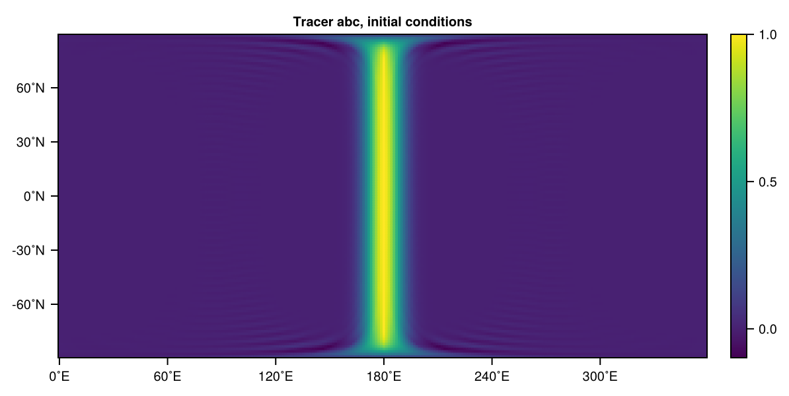
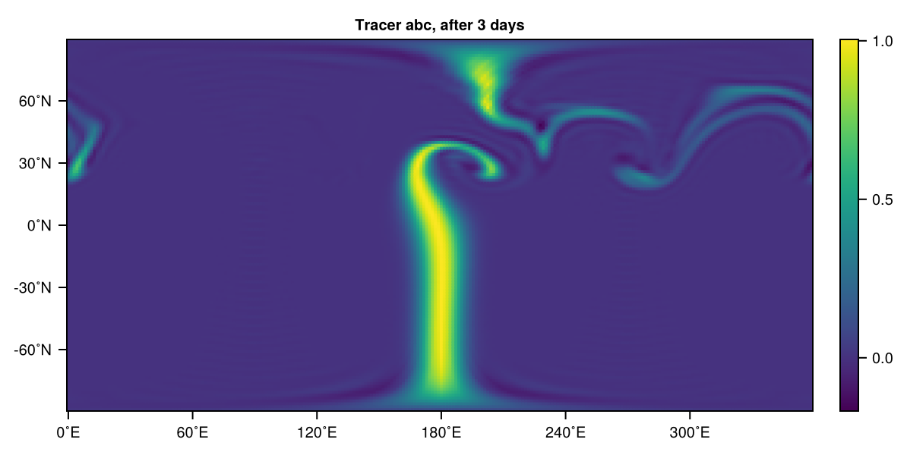

Tracer advection
A tracer is a property $q$ of the fluid that is advected with the flow $\mathbf{u} = (u, v, w)$ (for 3D, $\mathbf{u} = (u, v)$ for 2D) without changes along that trajectory.
\[\frac{Dq}{Dt} = \frac{\partial q}{\partial t} + (\mathbf{u} \cdot \nabla)q = 0\]
If the tracer $q$ does not impact the flow it is considered passive. Humidity, for example, is an active tracer as it changes the Geopotential (and therefore the pressure gradient force) through the Virtual temperature. A tracer is conserved in the absence of sources or sinks (the zero on the right-hand side above). Aerosols from wildfires might be considered to be a passive tracer, but the source term should increase the aerosol concentration whereever and whenever there is a wildfire. And also a sink term should be added representing aerosols being washed out in rainfall, or deposited on the ground. However, aerosols should be considered active and not passive if they influence the radiation and hence the temperature which couples the tracer equation above two-way with the other equations. Active or passive tracers are treated equally in SpeedyWeather. By default a tracer is passive, but if a forcing or parameterization is defined that depends on the tracer it becomes active, affecting the flow. A tracer definition in itself therefore does not make distinction between active or passive tracers but a forcing/parameterization definition can make existing tracers active.
Eulerian advection
Numerically we solve $Dq/Dt$ as
\[\frac{\partial q}{\partial t} = -\nabla\cdot(\mathbf{u}q) + q\mathcal{D} - W(q)\]
with $\mathcal{D}$ being the horizontal divergence (see Primitive equations). $\mathbf{u} = (u, v)$ is here the horizontal wind only because $W(q)$ is the Vertical advection operator (zero for 2D models). The products $\mathbf{u}q, q\mathcal{D}$ are computed in grid space, transformed to spectral space, where the divergence is taken for the former and added to the latter. The time stepping is then performed in spectral space.
Add/delete tracers
For every tracer in SpeedyWeather the tracer advection equation as outlined above is solved. One can add a new tracer to the model before it is initialized to a simulation
using SpeedyWeather
spectral_grid = SpectralGrid(trunc=63, nlayers=1)
model = ShallowWaterModel(spectral_grid)
# add a tracer called :abc
add!(model, Tracer(:abc))Dict{Symbol, Tracer} with 1 entry:
:abc => Tracer <: SpeedyWeather.AbstractTracer…This returns model.tracers, a dictionary, which will always give you an overview of which tracers are defined. Tracers are defined through a key::Symbol for which we use Symbol (not strings, because Symbols are immutable). We just wrap the key here in Tracer to define a tracer. You can add more tracers
add!(model, Tracer(:co2), Tracer(:ch4))Dict{Symbol, Tracer} with 3 entries:
:abc => Tracer <: SpeedyWeather.AbstractTracer…
:ch4 => Tracer <: SpeedyWeather.AbstractTracer…
:co2 => Tracer <: SpeedyWeather.AbstractTracer…or delete them again
delete!(model, Tracer(:co2))
delete!(model, Tracer(:ch4))Dict{Symbol, Tracer} with 1 entry:
:abc => Tracer <: SpeedyWeather.AbstractTracer…Tracers are just defined through their key, e.g. :co2, so while you can do tracer1 = Tracer(:co2) and tracer2 = Tracer(:co2), they will be considered the same tracer – and no two tracers with the same key can exist inside model (and simulation).
You can also add a tracer to a simulation, i.e. after the model is initialized.
simulation = initialize!(model)
add!(simulation, Tracer(:xyz))Dict{Symbol, Tracer} with 2 entries:
:abc => Tracer <: SpeedyWeather.AbstractTracer…
:xyz => Tracer <: SpeedyWeather.AbstractTracer…which will add the tracer to model.tracers as above but also add it to the prognostic and diagnostic variables (otherwise done at initialize!). There is no difference between adding a tracer to model versus adding it to the simulation. Conceptually, the existence of a tracer should be defined in model in the same way as PrimitiveWetModel defines the existence of humidity as an (active) tracer. But for convenience and the ability to add (or remove) a tracer at any time it is also possible to add a tracer to simulation (which will add it to the model, and the variables, too).
What you should not do is add a tracer to the model after it has been initialized. Then you end up with an additional tracer in model without there being variables for it, throwing an error. You can check that the tracers exists in the variables with
simulation.prognostic_variablesPrognosticVariables{Float32, Array}
├ vor: T63, 1-layer, 2-steps LowerTriangularArray{Float32}
├ div: T63, 1-layer, 2-steps LowerTriangularArray{Float32}
├ temp: T63, 1-layer, 2-steps LowerTriangularArray{Float32}
├ humid: T63, 1-layer, 2-steps LowerTriangularArray{Float32}
├ pres: T63, 1-layer, 2-steps LowerTriangularArray{Float32}
├ random_pattern: T63, 1-layer LowerTriangularArray{Float32}
├┐ocean: PrognosticVariablesOcean{Float32}
│├ sea_surface_temperature: 96-ring OctahedralGaussianGrid{Float32}
│├ sea_ice_concentration: 96-ring OctahedralGaussianGrid{Float32}
│├ sensible_heat_flux: 96-ring OctahedralGaussianGrid{Float32}
│└ evaporative_flux: 96-ring OctahedralGaussianGrid{Float32}
├┐land: PrognosticVariablesLand{Float32}
│├ soil_temperature: 2-layer, 96-ring OctahedralGaussianGrid{Float32}
│├ soil_moisture: 2-layer, 96-ring OctahedralGaussianGrid{Float32}
│├ snow_depth: 96-ring OctahedralGaussianGrid{Float32}
│├ sensible_heat_flux: 96-ring OctahedralGaussianGrid{Float32}
│└ evaporative_flux: 96-ring OctahedralGaussianGrid{Float32}
├ tracers: 2, [:abc, :xyz]
├ particles: 0-element Vector{Particle{Float32}}
├ scale: 1.0
└ clock: 2000-01-01T00:00:00where both :abc and :xyz are listed. Tracers in SpeedyWeather are based on dictionaries so the order of the tracers is arbitrary, they are always defined by their key instead.
Note that a tracer can be added to or deleted from a simulation at any time. So you can run a simulation, add a tracer, continute the simulation, or delete a tracer and continue. You can also just activate them or deactivate them, see below.
(De)activate tracers
While a tracer is defined through its key, e.g.
Tracer(:dust)Tracer <: SpeedyWeather.AbstractTracer
├ name::Symbol = dust
└ active::Bool = trueit also has a field active which can be changed any time. Do not confuse this with the discussion of active vs passive, categorising whether a tracer impacts the flow or not. Active versus deactivated here is solely used to describe whether its time evolution is temporarily "deactivated. An activated tracer (the default) is advected, a deactivated tracer does not change in time (=frozen) but continues to exist and all its variables remain in place. You can (de)activate a tracer with
activate!(model, Tracer(:abc))
deactivate!(model, Tracer(:abc))which is equivalent to model.tracers[:abc].active = true (default, or false) and also equivalent to (de)activating them in the simulation instead, i.e. activate!(simulation, Tracer(:abc)).
Set tracers
Tracers can be set to values by using the set! function, which can take scalars, fields (spectral or grid) or functions as arguments, e.g.
set!(simulation, abc=1)
(; GridVariable3D, nlat_half, nlayers) = spectral_grid
set!(simulation, abc=randn(GridVariable3D, nlat_half, nlayers))
set!(simulation, abc=(λ, φ, σ) -> exp(-(λ-180)^2/10^2))The first one sets abc to a global constant (not super exciting), the second to some random values on a grid (transforms automatically!), and the third sets the tracer to a Gaussian ridge that runs through the Pacific (see Tracer visualisation below).
For more examples how to use set! see Changing orography manually, Manual land-sea mask, and Rossby-Haurwitz wave in a BarotropicModel. But note that because we are setting a (in general) 3D variable here the vertical dimension must align: Hence nlayers for the grid, and the anonymous function must take three arguments, including the vertical coordinate σ even if it's independent of it.
Tracer visualisation
Let us illustrate some tracer advection in practice
using SpeedyWeather
spectral_grid = SpectralGrid(trunc=85, nlayers=1)
model = ShallowWaterModel(spectral_grid)
simulation = initialize!(model)
# add and set tracer and run a 0-day simulation
add!(simulation, Tracer(:abc))
set!(simulation, abc = (λ, φ, σ) -> exp(-(λ-180)^2/10^2))
run!(simulation, period=Day(0))
# visualise the initial conditions for this tracer
using CairoMakie
abc0 = simulation.diagnostic_variables.grid.tracers_grid[:abc][:, 1]
heatmap(abc0, title="Tracer abc, initial conditions")
So we started with a north-south stripe of some tracer. [:, 1] is used to pull out all values : on the one and only layer 1. The ShallowWaterModel has by default a jet in the northern hemisphere which will advect that tracer, after some days:
run!(simulation, period=Day(3))
abc1 = simulation.diagnostic_variables.grid.tracers_grid[:abc][:, 1]
heatmap(abc1, title="Tracer abc, after 3 days")
Output tracers
more to come...